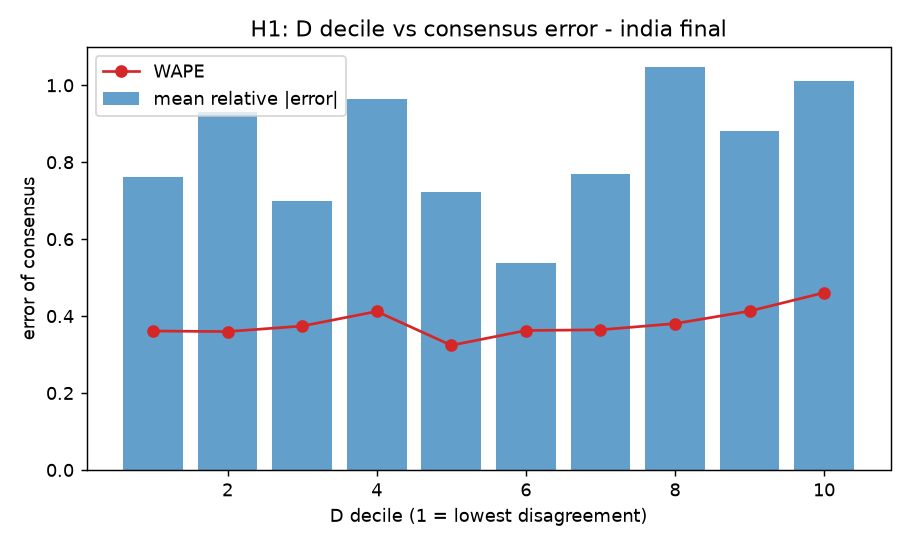
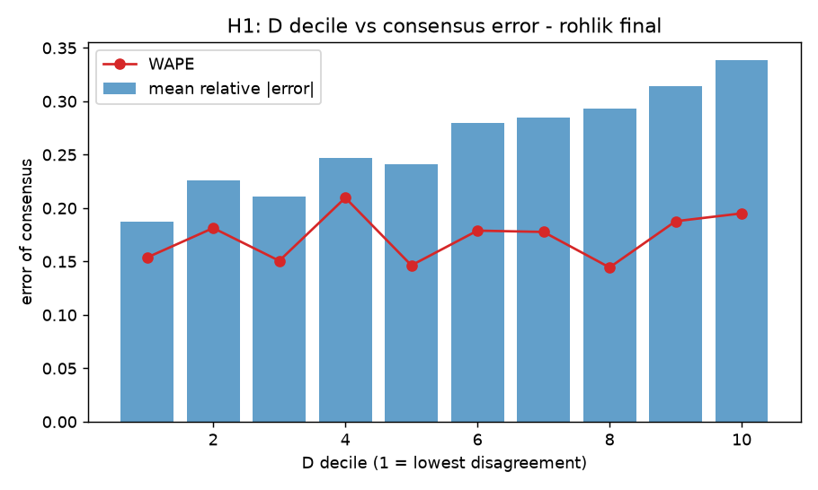
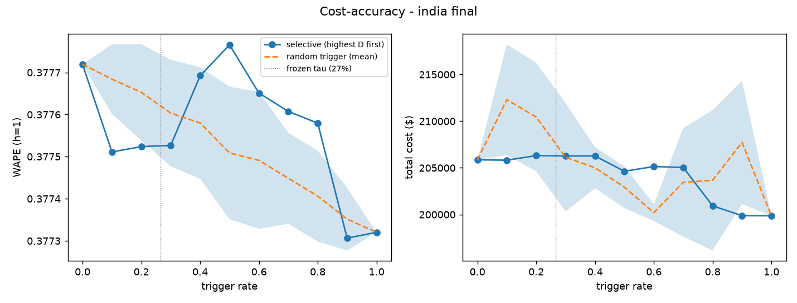
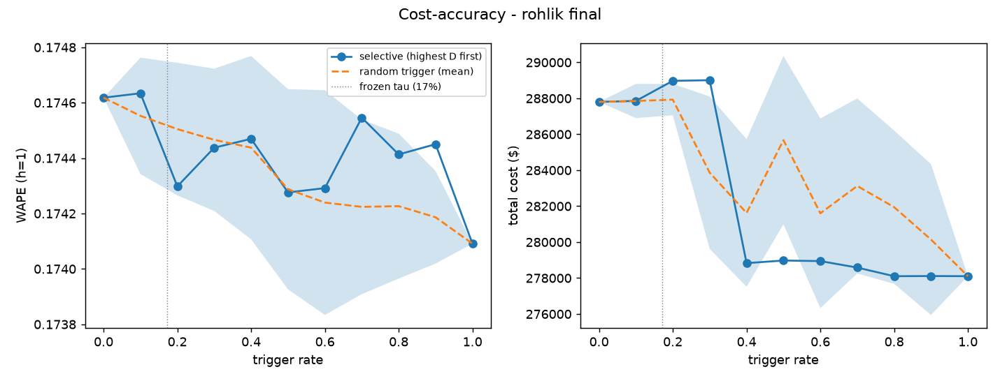

A disagreement-triggered multi-agent framework for daily demand forecasting and restocking decisions
Project documentation
src/retailsense; Next.js web app in web/docs/PROGRESS.md; paper in docs/paper/latex/A shop that restocks every week has to decide how much of each item to order before demand is known. RetailSense forecasts daily item demand with several specialised agents, each using one kind of evidence, and asks whether a large language model (LLM) should be consulted only when those agents disagree. If disagreement marks the risky forecasts, calling the LLM selectively should give most of the benefit of always calling it, at a fraction of the cost.
| ID | Hypothesis | How it is tested |
|---|---|---|
| H1 | Disagreement D is positively associated with forecast error | Spearman ρ between D and relative error; AUROC of D for the worst 20% of errors |
| H2 | Deliberation lowers error on the triggered cases | Share improved / worsened; Wilcoxon and item-clustered bootstrap |
| H3 | Selective deliberation matches always-on at a fraction of the LLM cost | Equivalence test plus LLM calls per 1,000 forecasts |
| H4 | D is a better trigger than chance | Against a random trigger at the same rate (Diebold–Mariano, equivalence) |
| H5 | Better forecasts give better inventory outcomes | Total cost from the shared (s, S) simulator |
H4 is the central test: if a random trigger at the same rate does as well, the disagreement signal adds nothing.
Disagreement is a weak but statistically significant risk signal on both datasets. Selective deliberation is statistically equivalent to always-on deliberation, to random triggering and to no deliberation (within 0.5% of WAPE on India and 1% on Rohlik) while using 73–83% fewer LLM calls. A single LightGBM model with all features (India) and ETS (Rohlik) are the most accurate systems, and a zero-shot foundation model (Chronos-Bolt) is close to the best. Declared post-hoc analyses show that the failure is not explained by correlated agents, a weak critic or an unlearned trigger alone. In this setting, disagreement does not tell the LLM when to deliberate.
available_at date and tests assert it never follows the prediction time.Each forecast passes through the stages below. Solid boxes are deterministic code; dashed boxes are LLM steps, which run only when the disagreement score reaches the threshold.
| Component | Module | Responsibility |
|---|---|---|
| Data generation and loading | data/india_generator.py, data/load.py, data/rohlik.py | Build the raw datasets and the item subset |
| Signals and features | data/weather.py, data/trends.py, data/features.py | Weather archive, interest index, per-horizon features with available_at |
| Agents | agents/ | Output schema, Historical agent, residual adjusters, confidence |
| Orchestrator | orchestrator/ | Disagreement, LLM client with cache, critic, revision, LangGraph state machine |
| Inventory | inventory/ | (s, S) policy, costs, daily simulator |
| Evaluation | eval/ | Baselines, metrics, statistics, phase runners, final run, post-hoc analyses |
| Storage | store/ | SQLite run store, MLflow tracking, config hashing |
| Service | service/ | Local retailer app (FastAPI) running the system on a store's own data |
Store MUM_1 in Mumbai, department KIRANA, all 60 items (20 archetypes × 3 brands), daily from
5 January 2019 to 28 April 2024. Sales, prices, promotions and a weekly search-interest index are
generated by retailsense.data.india_generator from configs/india_generator.yaml
with a fixed seed (7). Weather (Open-Meteo archive for Mumbai, 19.08°N 72.88°E) and the
festival calendar are real. Demand is the product of base level, store scale, weekday, growth,
weather, festival, payday, promotion and interest-shock multipliers, with gamma-Poisson noise and
occasional stock-outs. Every multiplier is logged per item and day in
data/raw/india/ground_truth.parquet, which makes it possible to check whether the critic
identifies the driver that actually moved demand.
The Kaggle Rohlik Sales Forecasting Challenge v2, warehouse Prague_1, 1 August 2020 to 2 June 2024. Items must have a record on every day from 27 April 2023; 63 of 857 qualify and the top 60 by training volume are used. A day without a sales record stays missing. There is no search-interest data in the frozen study, so the Trend agent is omitted.
| Dataset | Split | Days | Dates |
|---|---|---|---|
| India | Train | d_1–d_1799 | 5 Jan 2019 – 8 Dec 2023 |
| India | Validation | d_1800–d_1885 | 9 Dec 2023 – 3 Mar 2024 |
| India | Test | d_1886–d_1941 | 4 Mar – 28 Apr 2024 |
| Rohlik | Train | d_1–d_1260 | 1 Aug 2020 – 12 Jan 2024 |
| Rohlik | Validation | d_1261–d_1346 | 13 Jan – 7 Apr 2024 |
| Rohlik | Test | d_1347–d_1402 | 8 Apr – 2 Jun 2024 |
Splits are chronological and never shuffled. Models are fitted on train; every design decision and τ use validation; each test split is read once, by the final run.
available_at date; test_leakage.py asserts
available_at ≤ prediction_time for every row.Every agent returns the same schema-validated object (agents/schema.py): a point
forecast for horizons 1–7, a 10–90% band, a confidence c ∈ [0, 1], key factors and
limitations. Output is validated at the orchestrator boundary; an invalid output gets one repair
retry, then the agent abstains. An abstaining or failed agent is excluded from the consensus and
flagged, never converted to a zero forecast.
| Agent | Model | Evidence |
|---|---|---|
| Historical | LightGBM, Tweedie objective (point) and two quantile models, α = 0.1 and 0.9 (band); one direct model per horizon | Lagged sales (lags h, 7, 14, 28), rolling means and deviations over 7, 28 and 56 days, share of zero-sales days, price, item identity |
| Calendar | Residual adjuster: forecast = b + gi(b, xi), where b is the shared baseline and gi a LightGBM regressor trained on out-of-fold baseline residuals from 5 expanding time folds | Festivals and pre-festival ramps, payday, day of week and month |
| Weather | Target-day maximum temperature, rain, heavy rain and anomalies against a past-years climatology | |
| Trend | Scale-invariant weekly search-interest features (India only) |
ci = 1 / (1 + WAPEi)
computed over agent i's out-of-sample forecasts for that item over the trailing 28 revealed days (at least 14 needed).
The context signals are weak on their own, so the frozen design lets each context agent correct the baseline using only its own evidence. Out-of-fold residuals prevent an adjuster from learning on residuals that the baseline has already fitted. The cost of this design, examined in Section 9, is that all agents share the baseline, so their forecasts are highly correlated.
| # | System | What it isolates |
|---|---|---|
| 1 | Seasonal naive | Floor |
| 2 | ETS(A,N,A) per item | Classical statistical baseline |
| 3 | LightGBM with all features | Agents vs one model with the same evidence |
| 4 | Historical agent only | Value of context |
| 5 | Multi-agent simple average | Value of combining |
| 6 | Multi-agent confidence-weighted | Value of confidence weights |
| 7 | Random trigger at the same rate | Value of D as a trigger |
| 8 | Always-on deliberation | Upper bound and cost reference |
| 9 | RetailSense (D ≥ τ) | Proposed method |
Systems 7–9 come from one always-on deliberation per test point, so they are paired subsets of the same LLM answers.
At horizon 1, with weights wi = ci / Σcj and consensus ȳ = Σ wi yi:
D = √( Σi wi (yi − ȳ)2 ) / max(ȳ, 1)
D is a confidence-weighted coefficient of variation. It is unchanged when every forecast is scaled by a constant and is zero when all forecasts agree; both properties are unit-tested. A range version Drange is computed as a sensitivity check.
τ is the 80th percentile of validation D, written into the configuration before any test data are read: τ = 0.076898 (India) and 0.065352 (Rohlik). It is never adjusted by eye or after seeing test results.
Deliberation is one round in a LangGraph state machine (orchestrator/graph.py). The
critic receives each agent's horizon-1 forecast, band, confidence, evidence description, key factors
and limitations, plus 14 days of revealed sales. It returns a JSON report whose schema has no numeric
field: the main conflict, a strong / moderate / weak rating of each agent's evidence, missing
evidence and one question per agent.
Each agent's revision returns a confidence multiplier mi and a revised value y′i. Holding its position is presented as a normal answer, and the hold rate is tracked as a gate against social compliance. Code then:
Invalid JSON receives one corrective retry; after that the case falls back to the fast consensus
and is logged. Every LLM call is cached on disk (data/cache/) and runs at temperature 0.
The frozen model is Llama 3.1 8B served locally by Ollama; the model id comes from the configuration
and any API key only from .env.
The cache key is the SHA-256 of model, prompt version, call name, prompt hash and user message. An offline transport turns any cache miss into an error, which is how the frozen runs are replayed without new LLM calls.
A periodic-review (s, S) policy (inventory/policy.py) turns the 7-day forecast and its
band into an action. With σh = (upperh − lowerh) / 2.563:
s = Σh≤L fh + z√(Σh≤L σh2) S = Σh≤L+R fh + z√(Σh≤L+R σh2)
When the inventory position IP (on hand plus on order) is at or below s, the policy orders S − IP rounded up to whole case packs (RESTOCK); otherwise it orders nothing (HOLD), and REDUCE flags excess stock.
| Parameter | Value |
|---|---|
| Lead time L | 3 days |
| Coverage / review period R | 7 days |
| Safety factor z | 1.65 |
| Case pack | 6 units |
| Holding cost | 25% of price per year |
| Order cost | $5 per order |
| Lost-sales cost | 1 × price |
The daily simulator (inventory/simulator.py) receives orders after the lead time, sells
up to stock, and records sales, lost sales and costs. Every baseline and RetailSense go through the
identical simulator. Two tests protect the decision: the policy is deterministic for the same
inputs, and the inventory code cannot import the LLM layer.
| Phase | Split used | What happens |
|---|---|---|
| 1–2 | Train → validation | Data, features, agents and baselines; agent design fixed |
| 3 | Validation | H1 analysis; deliberation arms; τ and prompt v1 frozen |
| 4 | Validation | Inventory evaluation; dry run with a hold-stub LLM (systems 7–9 must equal system 6) |
| 5 | Test (once) | Final run: all 9 systems, backtests, ablations, tables, figures, SQLite, MLflow |
| Post hoc | Validation or stored outputs | Declared diagnosis; never refits or tunes on test data |
run_experiment --final refuses to run while τ is null, writes
reports/<dataset>/final/RUN_LOCK.json with the configuration hash, and refuses a
rerun under a different hash. India final run: hash acbb90af8345, 1–3 October
2026. Rohlik final run: hash 4d5d100636f4, 3–6 October 2026.
eval/stats.py).Every run logs parameters, metrics, the configuration hash and the git commit to MLflow
(mlflow.db), and run outputs go to SQLite (data/retailsense.db: forecast
runs, deliberations, inventory state, evaluations).
| # | System | India h=1 WAPE | India cost ($) | Rohlik h=1 WAPE | Rohlik cost ($) |
|---|---|---|---|---|---|
| 1 | Seasonal naive | 0.5530 | 199,786 | 0.2582 | 509,438 |
| 2 | ETS | 0.3904 | 138,621 | 0.1504 | 262,890 |
| 3 | LightGBM, all features | 0.3688 | 183,250 | 0.1665 | 133,467 |
| 4 | Historical agent | 0.3793 | 232,910 | 0.1760 | 314,936 |
| 5 | Multi-agent mean | 0.3778 | 203,357 | – | – |
| 6 | Multi-agent, confidence | 0.3777 | 205,862 | 0.1746 | 287,802 |
| 7 | Random trigger | 0.3778 | 206,393 | 0.1747 | 289,319 |
| 8 | Always-on deliberation | 0.3773 | 199,868 | 0.1741 | 278,104 |
| 9 | RetailSense | 0.3775 | 206,313 | 0.1745 | 287,344 |
Bold marks the best value in each column. All multi-agent systems (5–9) lie within 0.0005 WAPE of each other. The cost ranking differs from the accuracy ranking because the policy also uses the bands and lost-sales cost dominates.
| Hypothesis | India (simulated) | Rohlik (real) |
|---|---|---|
| H1 disagreement vs error | Weak: ρ = 0.072, AUROC 0.539 | Weak: ρ = 0.119, AUROC 0.579 |
| H2 triggered cases improve | Tiny: 30.3% improved, 24.6% worsened; gain 0.027 units, Holm p = 0.044 | Not supported (clustered p = 0.59) |
| H3 cheaper, same accuracy | Equivalent within 0.5%; 73% fewer LLM calls | Equivalent within 1%; 83% fewer LLM calls |
| H4 better than random | Not supported (DM p = 0.08) | Not supported (DM p = 0.57) |
| H5 better inventory | Not supported: ETS cheapest | Not supported: LightGBM cheapest |




Full tables are in reports/<dataset>/final/ and the write-up in
reports/RESULTS.md.
These analyses were designed after the test runs. They use validation data, or rescore stored
outputs with cached LLM answers replayed offline; none refits or tunes on test data. The frozen files
were verified unchanged by checksum after each analysis. All are run by
python -m retailsense.eval.posthoc <steps> and write to
reports/<dataset>/posthoc/.
| Question | Analysis | Finding |
|---|---|---|
| Is the weak signal caused by correlated agents? | Item-aware and fully independent agents (no sales history, no baseline) | Independent agents have within-item correlation near zero, yet D adds at most 0.013 AUROC as a warning for Historical-agent errors |
| Does the critic find the true driver? | Critic ratings against logged India multipliers (840 test cases) | The 8B critic rates the driver "strong" 8.3 points more often [5.2, 11.7], but revisions do not move weight toward it |
| Does a stronger critic help? | Gemma 4 31B vs Llama 3.1 8B on the same 300 validation cases | 31B moves weight toward the driver (+0.088) and lowers India always-on WAPE 0.3658 → 0.3625; selection by D is still no better than random |
| Independent agents with either critic? | 300–600 validation cases per run, scored against the frozen systems on the same cases | Only large gain (Rohlik, 31B) repairs errors the weak agents introduce and stays worse than the frozen consensus; with 8B, deliberation barely moves WAPE (≤ 0.0003) |
| Can the trigger be learned? | Time-blocked CV on 1,500 stored deliberations | No better than random (ρ with gain 0.023 and −0.022); a perfect trigger would gain about 1% (India) and 4% (Rohlik) |
| Is a deep-learning baseline missing? | Zero-shot Chronos-Bolt (small) | Validation WAPE 0.3708 (India) and 0.1642 (Rohlik): tied with LightGBM, better than the consensus |
| Are "no difference" claims justified? | Equivalence, MDE, Holm, clustered H2 | Arms equivalent within 0.5% (India) and 1% (Rohlik); MDE 0.1–1.3% of WAPE |
llama3.1 pulled for the local LLM (no API key needed), or an OpenRouter
/ Google key in .env if the provider is switched.posthoc extra for the post-hoc baselines: xgboost, torch,
chronos-forecasting.python -m venv .venv .venv\Scripts\activate # macOS/Linux: source .venv/bin/activate pip install -e ".[dev]" # add ,posthoc for the post-hoc baselines copy .env.example .env # fill in only if using a hosted LLM; never commit .env ollama pull llama3.1 # then keep "ollama serve" running (OLLAMA_NUM_PARALLEL=4)
| Step | Command | Output |
|---|---|---|
| Data | python -m retailsense.data.india_generator | data/raw/india/ |
| Item subset | python -m retailsense.data.load | configs/subset.yaml |
| Signals | python -m retailsense.data.weather, .trends | data/processed/india/ |
| Features | python -m retailsense.data.features | features.parquet |
| Agents and baselines | python -m retailsense.eval.run_experiment --phase 2 | MLflow india_phase2 |
| H1 analysis | python -m retailsense.eval.h1_analysis | reports/india/h1_* |
| Deliberation arms | python -m retailsense.eval.deliberation_eval [--freeze] | reports/india/phase3b_* |
| Inventory | python -m retailsense.eval.inventory_eval | reports/india/phase4_* |
| Dry run | python -m retailsense.eval.run_experiment --dry-run | reports/india/dryrun/ |
| Final test run | python -m retailsense.eval.run_experiment --final | reports/india/final/ |
| Next-week forecast | python -m retailsense.forecast_future | reports/india/future_forecast.csv |
| Post-hoc analyses | python -m retailsense.eval.posthoc [steps] | reports/india/posthoc/ |
For Rohlik, set RETAILSENSE_CONFIG=configs/experiment_rohlik.yaml before any command.
bash reproduce.sh # full pipeline; LLM answers come from the cache when present bash reproduce.sh --offline # cache only: any LLM cache miss is an error
Every API and LLM response is cached under data/cache/. Sharing that folder lets
someone else rebuild every result without a single API call. Every configuration is hashed, and the
hash is stored with the run lock and in MLflow.
Both frozen pipelines (India and Rohlik) were rerun from features.parquet with the current code
into a separate folder, using only cached LLM answers. Nothing frozen was modified.
| Item | Result |
|---|---|
| Configuration hash | acbb90af8345 (India) and 4d5d100636f4 (Rohlik), identical to the frozen run locks |
| New LLM calls | 0 |
| Validation, test and backtest forecasts (all parquet files) | Byte-identical |
| Result tables, case study, run lock | Byte-identical |
table_latency_llm.csv | Only the two latency columns differ (cache replay is milliseconds); trigger rates and LLM calls identical |
| Frozen files afterwards | All checksums unchanged (India 42/42, Rohlik 37/37) |
configs/ experiment.yaml (every number), experiment_rohlik.yaml, inventory.yaml,
india_generator.yaml, subset*.yaml, posthoc.yaml, service.yaml
src/retailsense/
config.py pydantic configuration models and loaders
data/ India generator, Rohlik loader, item subset, weather, trends, features
agents/ schema, Historical (LightGBM + quantiles), residual adjusters, confidence
orchestrator/ disagreement, LLM client (cache, JSON schema), critic, revise, LangGraph graph
inventory/ (s, S) policy, costs, daily simulator
eval/ baselines, metrics, stats, run_experiment, h1_analysis, deliberation_eval,
inventory_eval, final, posthoc
store/ SQLite run store, MLflow helpers, config hashing
service/ local retailer app (FastAPI) and per-store runs
forecast_future.py next-week forecast after the experiment
web_export.py exports stored results to JSON for the web app
app/ Streamlit dashboard
web/ Next.js web app (results viewer and retailer front end)
tests/ pytest suite
reports/ tables, figures, RESULTS.md, posthoc/ outputs
docs/ blueprint, rules, architecture, design, PROGRESS.md, paper/
data/ raw/, processed/, cache/ (LLM and API), retailsense.db
reproduce.sh one-command reproduction
Every number that can affect a result lives in configuration, loaded and validated with pydantic
(config.py). Nothing is hard-coded.
| Key | Value | Meaning |
|---|---|---|
data.store, top_n | MUM_1, 60 | Store and number of items (ranked on train only) |
agents.horizons | 1–7 | One direct model per horizon |
agents.confidence_window | 28 (min 14) | Trailing days for confidence |
agents.oof_folds | 5 | Expanding folds for residual training |
disagreement | cv, floor 1.0, quantile 0.80 | D definition and τ quantile |
analysis.worst_share | 0.20 | "Worst errors" for AUROC |
analysis.bootstrap | 1,000 | Bootstrap resamples over items |
deliberation.rounds | 1 | Single bounded revision |
deliberation.m_bounds | [0.25, 2.0] | Confidence-multiplier limits |
deliberation.provider, model | ollama, llama3.1:latest | Frozen LLM |
deliberation.temperature | 0 | Deterministic answers |
deliberation.prompt_version | v1 (frozen 1 Oct 2026) | Part of the cache key |
deliberation.history_days | 14 | Revealed sales shown to the critic |
deliberation.max_invalid_retries | 1 | Invalid JSON → retry → fast path |
deliberation.tau | 0.076898 (India) | Frozen threshold |
inventory.yaml | L 3, R 7, z 1.65, pack 6 | Policy and cost parameters (Section 6) |
The applications read stored results; they never retrain a model behind the reported numbers.
streamlit run app/streamlit_app.py
Four views: Forecast (agents with bands, D against τ, deliberation badge, action), Explain (key factors, critic report, initial vs revised forecasts, reason for the action), Evaluate (all tables and figures) and Live (demo mode: today's Open-Meteo forecast for Mumbai beside a replayed item's stored forecasts).
python -m retailsense.web_export # SQLite + reports/ -> web/public/data/ cd web && npm install && npm run dev # http://localhost:3000 npm run build # static site in web/out/
Built with Next.js, TypeScript, Tailwind CSS, shadcn/ui, Apache ECharts and TanStack Query. It has an overview of both studies plus the Forecast, Explain, Evaluate, Live and Next-week views.
cd web && npm run build && cd .. python -m retailsense.service.app # http://localhost:8000/retailer/
A local app with no accounts; store data never leaves the machine. A retailer adds a store (its
town sets the weather and public holidays), uploads a sales CSV (date, item_id, units_sold,
price, at least 400 days), optionally a stock CSV and a Google Trends download, and receives a
7-day forecast and a RESTOCK / HOLD / REDUCE order per item, with the agents' evidence and the
critic's review for items they disagree on. Each run uses the research system on the store's own
data, with τ set to the 80th percentile of D over the store's last 86 days. If the LLM stops
answering, the run still finishes and the affected items are labelled "LLM unavailable". It
listens on 127.0.0.1 only. The critic's LLM is set in configs/service.yaml.
pytest -q # 134 tests pass, 1 expected failure ruff check src tests
The mandatory tests protect the project's validity and are never skipped:
| Test | Asserts |
|---|---|
test_leakage.py::test_no_future_features | No feature's source timestamp is at or after the prediction time |
test_leakage.py::test_actuals_isolated | Agent code paths cannot read the actuals |
test_leakage.py::test_weather_is_forecast | The weather observation endpoint is never called |
test_disagreement.py::test_scale_invariance | D is unchanged when all forecasts scale by a constant |
test_disagreement.py::test_identical_forecasts | Identical forecasts give D = 0 |
test_policy.py::test_determinism | Same inputs give the same action and quantity |
test_policy.py::test_llm_cannot_set_quantity | No code path from LLM output to order quantity |
test_schema.py::test_invalid_agent_output | Invalid output leads to abstention, never a zero forecast |
Other suites cover the agents, deliberation, final run, metrics, statistics, simulator, data loading, the India generator, post-hoc analyses, the next-week forecast, the dashboard and the retailer service.
.env; every LLM and API call is cached.| Term | Meaning |
|---|---|
| Agent | A forecaster that uses one kind of evidence and returns a schema-validated forecast |
| AUROC | Area under the ROC curve; 0.5 is chance |
| Always-on | Deliberating on every forecast |
| Band | The 10–90% prediction interval of an agent |
| Consensus | Confidence-weighted average of the agents' forecasts |
| Critic | The LLM step that explains why agents disagree; it outputs no numbers |
| D | Normalised, confidence-weighted disagreement between agents |
| DM test | Diebold–Mariano test for equal forecast accuracy |
| ETS | Exponential smoothing state-space model |
| Fast path | Returning the consensus without calling the LLM |
| Hold rate | Share of revisions in which an agent keeps its forecast |
| Kirana | A neighbourhood grocery shop in India |
| MDE | Minimum detectable effect at 80% power |
| OOF | Out-of-fold: predictions made on data not used to fit the model |
| (s, S) policy | Order up to S when the inventory position falls to s or below |
| τ | The frozen disagreement threshold that triggers deliberation |
| TOST | Two one-sided tests, the equivalence-testing procedure |
| WAPE | Weighted absolute percentage error: Σ|y − ŷ| / Σy |